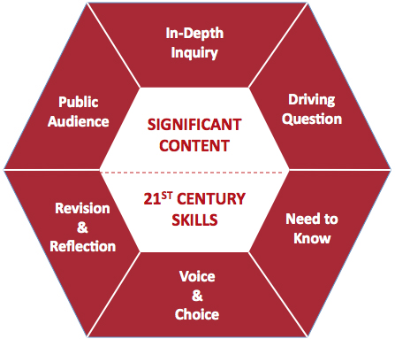

8 Elementos esenciales para ABP
Todo buen proyecto debe cumplir dos criterios fundamentales: debe tener sentido para los alumnos, deben percibirlo como algo que personalmente quieren hacer bien porque les importa. Además debe tener un propósito educativo, debe ser significativo, acorde a los criterios de evaluación del tema o materia que trata.
Estos son los ocho elementos esenciales que debe incluir un buen proyecto.

1. Contenido significativo
Es cierto que es imposible "ver" tanto contenido trabajando con ABP como dando clases magistrales, pero trabajando en un proyecto los alumnos estudian los contenidos de forma mucho más profunda. El profesor debe planificar el proyecto de forma que se centre en los criterios de evaluación; debe reflejar lo que considera esencial dentro del currículo. Y los estudiantes deben encontrarlo significativo, es decir, real y cercano a su entorno e intereses.
2. Necesidad de saber
Podemos plantear a los alumnos una idea, describir la tarea a realizar, dar instrucciones y recursos… o podemos empezar con un golpe de efecto: un vídeo, un artículo, algo que active a los alumnos en un debate o discusión. Por ejemplo, un vídeo mostrando una playa paradisíaca que termina con un cartel de “cerrada por contaminación del agua”. ¿Os ha pasado esto en alguna playa, estando de vacaciones?¿Qué va a pasar con esta playa?¿Por qué ha pasado?
Abrir el proyecto con un “evento” que haga surgir preguntas por parte de los alumnos hacia el profesor (y no al revés). Un evento implica algo emocional, algo que activa al alumno, que apela a su necesidad de saber.
3. Una pregunta que dirija la investigación
En el caso del ejemplo, ¿Cómo podemos reducir el número de días que esta playa permanecerá cerrada por contaminación? La pregunta subyacente al trabajo debe ser provocativa, de respuesta abierta, compleja y conectada con el núcleo de lo que los alumnos deben aprender. Sin la “gran pregunta”, los alumnos podrían no entender para qué están haciendo el proyecto. Y si no lo entienden, no se implican, sólo obedecen. Cuando se les pregunte en qué trabajan, la respuesta podría ser “ayudar a reabrir la playa” (si el proyecto está bien planteado) o “estamos haciendo un póster sobre contaminación” (si no lo está). Una buena pregunta guía captura de forma clara el alma del proyecto en un lenguaje irresistible que haga que los alumnos lo perciban con sentido y como un reto. Debe ser provocativa, abierta y compleja y unida al núcleo de lo que el profesor quiere que sus estudiantes aprendan.
4. Voz y voto para los alumnos
Una vez captado el interés de los alumnos, el profesor plantea las tareas a realizar. Podría ser un informe personal unido a una presentación oral que se apoye en elementos multimedia más un producto final, elaborado en equipos de cuatro y elegido por los propios alumnos. En el ejemplo, un anuncio publicitario, panfletos informativos, una web... Hay una escala de autonomía de los alumnos que puede empezar por pedirles que elijan entre varias opciones propuestas por el profesor y terminar pidiéndoles que propongan una idea de proyecto en el que ellos mismos se repartan responsabilidades y ajusten tiempos. Es importante que los alumnos tengan capacidad de elección dentro de un proyecto.
5. Competencias del siglo XXI
Una vez planteado el proyecto llega la hora del trabajo colaborativo. En grupos de tres o cuatro alumnos, éstos identifican tareas y responsabilidades y se las reparten (si esta parte la hace el profesor ya no hablamos de colaboración sino de cooperación). El trabajo colaborativo no sale solo. Antes del proyecto el profesor debe haber preparado a los alumnos con actividades o juegos de roles y de hacer equipo.
El proyecto del siglo XXI se plasma en herramientas del siglo XXI, lo que implica más trabajo previo: antes de iniciar el proyecto, los alumnos deben haber aprendido a elaborar vídeos, exponer presentaciones, reflejar ideas y procesos en blogs…
Un buen proyecto debería dar a los alumnos la posibilidad de practicar y así aprender las competencias demandadas en nuestros tiempos: expresión del pensamiento crítico, comunicación efectiva, uso de tecnologías y trabajo en equipo.
6. Investigación lleva a innovación
Con el evento de entrada en el proyecto y el debate surgido de él, el profesor recolecta una serie de preguntas que ayudan al ajuste fino de la “gran pregunta” o "pregunta guía" (driving question en inglés). En nuestro ejemplo, ¿qué enfermedades puedes coger del agua?¿Hace falta beberla para ponerse enfermo?… Los equipos deben trabajar en esas preguntas mediante libros, webs, documentales, noticias, etc. Pero no se trata de que encuentren información y la peguen en un póster o de que la resuman en un formato bonito. En la verdadera investigación los alumnos deben seguir un hilo que les lleve a más preguntas, a la búsqueda de nuevos recursos y finalmente a sus conclusiones e ideas propias sobre cómo resolver el problema. Es muy importante crear un ambiente en clase que anime a los estudiantes a añadir nuevas preguntas, a hacer hipótesis y a estar abiertos a nuevas perspectivas.
7. Evaluación, retroalimentación y revisión
Mientras los alumnos desarrollan sus productos el profesor debe estar detrás, supervisando borradores, planes, comprobando las fuentes utilizadas por los alumnos, monitorizando el avance. La evaluación a lo largo del proyecto es importantísima. Con ella los alumnos aprenden que el trabajo de calidad no sale del primer intento, que en la vida real nuestro trabajo está sujeto a continua revisión. Además el profesor también debe promover y dirigir la crítica constructiva entre los estudiantes.Deben aprender que el trabajo de calidad en el mundo real no sale a la primera, sino que es fruto de una continua revisión.
8. Presentación del producto final ante una audiencia
Para los alumnos tiene infinitamente más sentido trabajar para una audiencia real que para el profesor o el examen. Los resultados del proyecto deben exhibirse antes otras clases, jefes de estudio, padres, colectivos relacionados, virtualmente, etc. con el fin permitir que los alumnos reflexionen sobre el trabajo una vez terminado, sobre lo próximo que van a hacer y sobre lo que han aprendido. Y por supuesto, para que sientan el orgullo del trabajo bien hecho, lo cual es fundamental.
Para saber más
- Why we changed our model of the 8 Essentials for project based learning, John Larmer, John R. Mergendoller, PhD. Buck Institute for Education
- Project design rubric, The Project Design Rubric uses the 8 Essential Elements of PBL as criteria to evaluate projects. The rubric describes three levels to assess the design of a project: Lacks Essential Features of Effective PBL, Needs Further Development, Incorporates Best PBL Practices. Definitions and practical examples are used to clarify the meaning of each dimension.